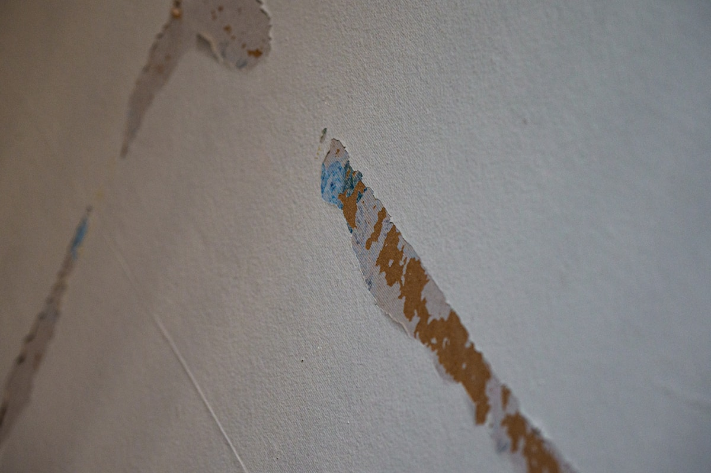

Water damage at a commercial property creates a cascade of problems beyond the physical damage itself — business interruption, employee displacement, inventory loss, potential liability issues, and revenue impact. Whether your office, retail space, restaurant, warehouse, or medical facility has experienced flooding from a burst pipe, roof leak, fire suppression system discharge, or natural disaster, Whittier Restoration provides specialized commercial water damage restoration designed to get your business back up and running as quickly as possible while minimizing disruption and financial loss.
Our commercial restoration team understands that business operations cannot wait for standard residential timelines. We deploy larger equipment arrays, utilize multiple crews when necessary, and coordinate work schedules around your business hours when possible. Our team has experience restoring water damage in offices, retail stores, restaurants, medical facilities, warehouses, data centers, and multi-tenant commercial buildings, each with their own unique requirements and challenges.
Business interruption costs often exceed the physical damage costs of water damage. Every hour of downtime means lost revenue, displaced employees, disrupted customer service, and potential contract penalties. Our priority is restoring your operational capability as quickly as possible, often setting up temporary drying and work zones that allow partial operations to continue during restoration. We coordinate with your property manager, insurance adjuster, and any necessary contractors to keep the restoration moving efficiently from start to finish.

When to Call for Commercial Water Damage in Whittier
Catching these issues early helps you avoid costly problems and protect your property. Watch for these telltale signs that professional help is needed:
- Water intrusion from roof leaks, plumbing failures, or HVAC system malfunctions
- Fire sprinkler system discharge causing widespread water damage
- Flooding from storms, flash floods, or drainage system failures
- Water damage to inventory, equipment, documents, or electronic systems
- Tenant complaints about water stains, odors, or visible moisture
- HVAC system condensation causing moisture buildup and mold concerns
- Restroom or kitchen plumbing failures in commercial spaces
Don't Wait Until It's an Emergency
Many water damage problems start small but can escalate quickly into costly emergencies. Call Whittier Restoration at (419) 728-6449 at the first sign of trouble.
Need Help With Commercial Water Damage?
Our IICRC-certified technicians are standing by to help.
Call (419) 728-6449 NowCommercial Water Damage FAQ
Why Hire a Professional for Commercial Water Damage?
Commercial water damage restoration requires a fundamentally different approach than residential restoration. Commercial buildings have larger floor areas, different construction materials (steel framing, commercial-grade HVAC, suspended ceiling grids, raised floors), and critical business systems that require specialized handling. Industrial equipment, sensitive electronics, inventory, and important documents all require specific protection and restoration protocols.
Liability concerns also make professional commercial restoration essential. Property owners and managers have legal obligations to maintain safe conditions for employees, customers, and tenants. Water damage can create slip hazards, electrical risks, and air quality concerns that require professional assessment and mitigation. Documented professional restoration provides evidence of due diligence that protects against liability claims.
How Our Commercial Water Damage Works
We follow a proven process to ensure every job is completed to the highest standards. Here's how we handle commercial water damage from start to finish:
Priority Assessment
Our commercial team rapidly assesses the damage scope, identifies critical business assets, and develops a restoration plan that prioritizes getting your most important areas operational first.
Industrial-Scale Extraction
Multiple truck-mounted extraction units and industrial pumps remove large volumes of water quickly. We protect and relocate inventory, equipment, and critical documents during the process.
Accelerated Drying
Enhanced equipment deployment with multiple dehumidifier and air mover arrays accelerates drying timelines. We work around your business hours when possible to minimize disruption.
Business Restoration
Damaged commercial materials are repaired or replaced. We coordinate all trades, provide detailed insurance documentation, and ensure your facility meets occupancy and health code requirements.
Questions About Commercial Water Damage?
We provide honest advice and free estimates on all commercial water damage work.
Call (419) 728-6449 NowCommercial Water Damage Prevention Tips
Taking preventive measures can help you avoid costly water damage issues down the road. Here are our expert recommendations:
- Implement a regular building maintenance program that includes plumbing and roof inspections
- Install commercial water leak detection systems tied to building automation systems
- Maintain fire suppression systems properly — accidental discharge is a common cause of damage
- Ensure commercial HVAC systems are properly maintained to prevent condensation issues
- Develop a business continuity plan that includes water damage emergency response procedures
- Keep a list of emergency contacts including your restoration company and insurance agent
- Train employees on water shutoff locations and initial emergency response procedures
DIY vs. Professional Commercial Water Damage
Some simple tasks are suitable for DIY, but most water damage work benefits from professional tools, training, and experience. Consider the following comparison:
| Factor | DIY Approach | Professional Service |
|---|---|---|
| Downtime | Extended closure while fumbling with rental equipment | Rapid restoration minimizes business interruption |
| Scale | Consumer equipment inadequate for commercial spaces | Industrial equipment designed for large-scale drying |
| Liability | Potential code violations and liability exposure | Professional documentation demonstrates due diligence |
| Insurance | May not maximize business interruption coverage | Comprehensive documentation supports full claim recovery |
| Coordination | Must manage multiple contractors independently | Single point of contact manages entire restoration |
| Compliance | May miss health code or occupancy requirements | Ensure all regulatory compliance for reopening |
Schedule Your Commercial Water Damage Service
Don't let water damage problems get worse. Call Whittier Restoration now for prompt, professional service.
Call (419) 728-6449 Today